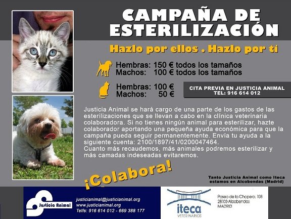

Campaña de Esterilización en Alcobendas (Madrid)

Iniciamos una campaña de esterilización en colaboración con la clínica veterinaria ITECA. El mayor problema de España y por ello los miles de animales abandonados es la super población. Se evitaría si los propietarios tuvieran a sus animales esterilizados.
Contamos con vuestra ayuda para la difusión de está campaña y poder esterilizar al mayor número de animales posibles. Esperamos que esta campaña anime a otros veterinarios a colaborar con asociaciones y poder hacer este tipo ce campañas de manera conjunta.
Justicia Animal se hará cargo de una parte de los gastos de esterilización que se lleven a cabo en la clínica veterinaria colaboradora.
Si no tienes ningún animal para esterilizar, hazte colaborador aportando una pequeña ayuda económica para que la campaña pueda seguir siendo permanente.
Cuanto más recaudemos, más animales podremos esterilizar y más camadas indeseadas evitaremos.
justicianimal@justicianimal.org
Comentarios
Laura
Jue, 27/10/2011 - 10:56
Permalink
Solo se da en Madrid
La campaña la hace una asociación en colaboración con una única clínica veterinaria, ésta es la de Alcobendas, únicamente.
Cuando se han hecho campañas se hacen normalmente a nivel autónomo, nunca nacional por lo que para que haya una campaña en Málaga tendrá que hacerse con ayuda de alguna asociación o protectora de tu comunidad.
Habla con alguna protectora y pregunta a ver si tienen pensando hacer una camapaña, si están en ello así tienes la información y sino igual les das la idea.
Laura
Jue, 27/10/2011 - 11:02
Permalink
Habla con Justicia Animal
Hola Celia.
Esto no es ningún email, es solo un comentario. Todo nórdicos lo llevo yo, no conozco a ninguna Almudena ni Maty por lo que creo que puedes estar confundida.
De todas maneras, yo solo estoy ayudando a que la gente esté informada sobre esta campaña, no tengo nada que ver con la asociación ni con la clínica. Si necesitas que te hagan aún un precio más especial solo puedes hablar con ellos directamente y a ver que te dicen.
En la foto viene toda la información para que te puedas poner en contacto con la asociación Justicia Animal que son quienes llevan la campaña.
Un saludo.
Laura
Lun, 02/03/2015 - 07:40
Permalink
Campaña
Hola Sandra
Eso fue un año, no se si seguirá vigente.
Te puedo recomendar esta campaña de este gran veterinario en Tres Cantos que si está vigente ahora mismo y es de gran calidad, que a veces vemos el precio sin pensar en la operación.
Veterinario Foresta de Tres Cantos, buscadlo en google, no me deja poner el enlace. Lo siento.
Añadir nuevo comentario